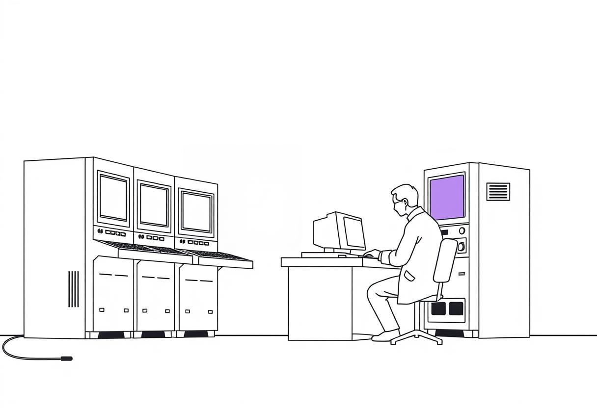
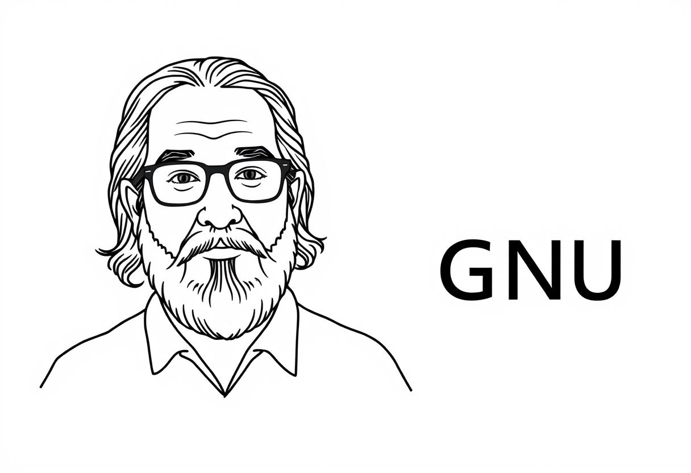
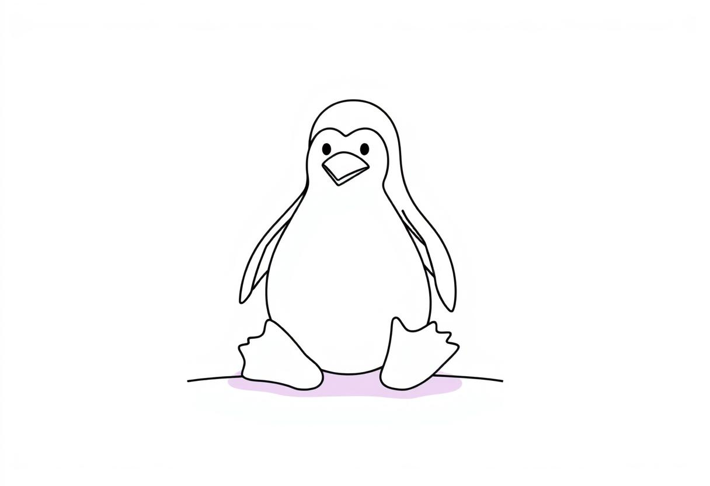
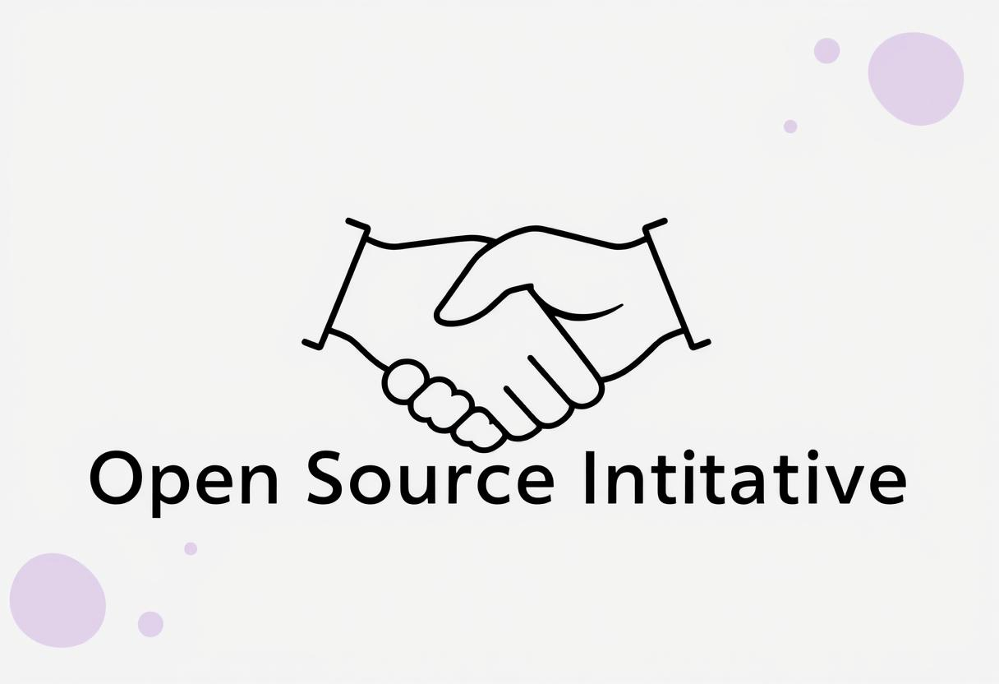
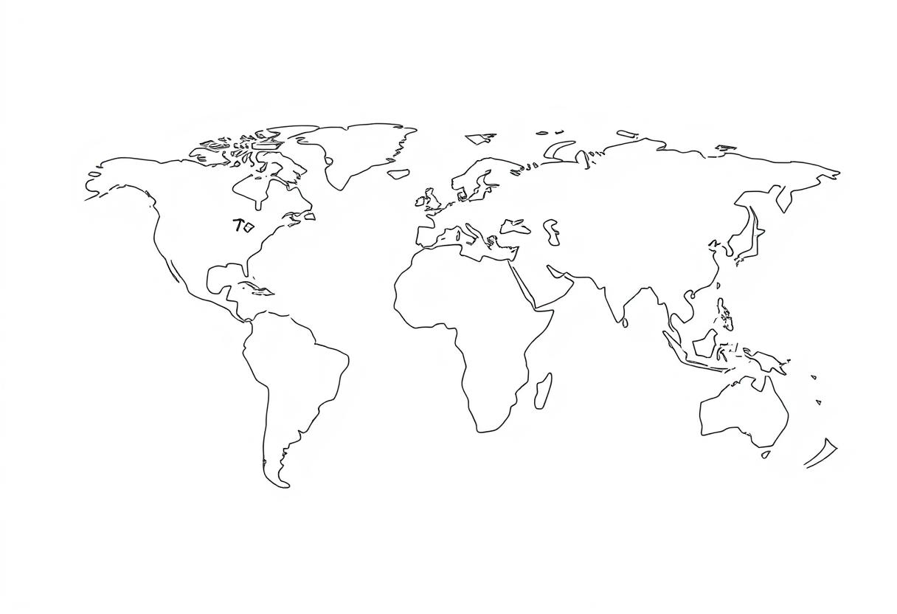

Коротка історія: Від витоків до сучасності
1950-ті – 1970-ті: Спільне використання
У перші дні комп'ютерів програмне забезпечення часто розповсюджувалося разом з обладнанням і було відкритим для модифікацій. Це була ера наукових досліджень, де обмін знаннями був нормою.
1983: Проєкт GNU
Річард Столмен започатковує проєкт GNU з метою створення повністю вільної операційної системи. Це поклало початок руху за вільне програмне забезпечення.
1991: Linux Kernel
Лінус Торвальдс випускає ядро Linux, яке стало одним з найяскравіших прикладів успіху відкритого програмного забезпечення та каталізатором його широкого розповсюдження.
1998: Заснування OSI
Термін "Open Source" був офіційно запроваджений Open Source Initiative, що визначило сучасне розуміння відкритого програмного забезпечення.
Сучасність: Глобальна сила
Сьогодні Open Source домінує у багатьох сферах, від серверних технологій до мобільних додатків, формуючи основу для інновацій у всьому світі
Ключові принципи та філософія Open Source
Філософія Open Source ґрунтується на кількох фундаментальних принципах, які відрізняють його від традиційної моделі розробки програмного забезпечення.
Свобода використання
Користувачі мають повну свободу запускати програму для будь-яких цілей, без обмежень.
Свобода вивчення
Можливість вивчати, як працює програма, і адаптувати її до своїх потреб шляхом доступу до вихідного коду.
Свобода розповсюдження
Право розповсюджувати копії, щоб допомогти іншим.
Свобода покращення
Можливість покращувати програму та ділитися своїми покращеннями з усім співтовариством, щоб усі отримували користь.
Ці принципи не тільки сприяють технічному прогресу, але й підтримують етичні цінності, такі як прозорість, співпраця та доступність інформації.
Переваги Open Source: Чому це важливо для вас:
Відкрите програмне забезпечення пропонує численні переваги як для індивідуальних користувачів, так і для великих корпорацій.

Безпека
Завдяки тому, що код відкритий, тисячі розробників можуть перевіряти його на вразливості, що робить Open Source часто більш безпечним.
Гнучкість та кастомізація
Ви можете адаптувати програмне забезпечення до своїх унікальних потреб, змінюючи код або використовуючи існуючі модифікації.
Економія витрат
Багато Open Source проєктів безкоштовні, що дозволяє значно знизити витрати на ліцензування програмного забезпечення.
Підтримка спільноти
Велика спільнота користувачів та розробників завжди готова допомогти, відповісти на питання та вирішити проблеми.

Інновації
Відкритий доступ до коду стимулює швидкий розвиток технологій та появу нових рішень.
Open Source у повсякденному житті: Приклади, якими ви користуєтесь
Можливо, ви навіть не усвідомлюєте, наскільки широко Open Source інтегрований у ваше життя.
Від операційних систем, таких як Android та Linux, до веб-браузерів, таких як Firefox, і навіть платформ для створення сайтів, як WordPress, Open Source є невід'ємною частиною цифрового ландшафту, яким ми користуємося щодня.
Як долучитися до спільноти Open Source
Спільнота Open Source відкрита для всіх, незалежно від рівня навичок. Ваш внесок може бути цінним.
Вивчіть основи
Ознайомтеся з основами програмування, системою контролю версій Git та принципами роботи Open Source проєктів.
Знайдіть проєкт
Виберіть проєкт, який вас цікавить. Почніть з документації або з маленьких завдань для початківців.
Внесіть свій вклад
Це може бути виправлення помилок, написання коду, покращення документації, тестування, дизайн інтерфейсу або навіть переклад.
Спілкуйтеся
Приєднуйтесь до форумів, чатів та зустрічей спільноти. Активне спілкування є ключем до успішної співпраці.
Майбутнє Open Source: Тренди та інновації
Open Source продовжує розвиватися, адаптуючись до нових технологій та викликів.
Штучний інтелект та машинне навчання
Все більше інструментів та бібліотек для AI/ML стають відкритими, прискорюючи дослідження та розробки.

Хмарні технології
Open Source є основою багатьох хмарних платформ, що забезпечує гнучкість та контроль для користувачів.

Блокчейн та Web3
Більшість проєктів у сфері децентралізованих технологій будуються на відкритих стандартах та коді.
Сталий розвиток
Open Source проєкти допомагають вирішувати глобальні проблеми, від екології до охорони здоров'я.
Майбутнє Open Source — це майбутнє інновацій, співпраці та колективного інтелекту, що формує більш відкритий та доступний цифровий світ.